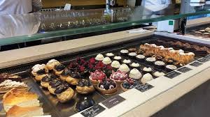
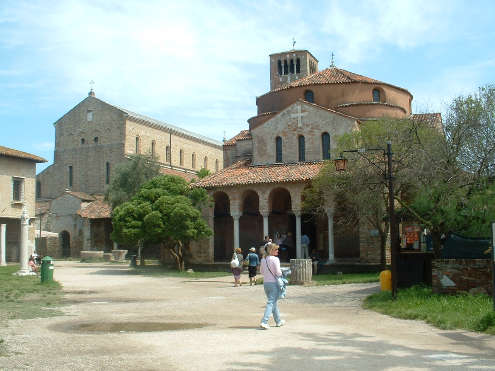

Dagprogramma 1
Majer ontbijt restaurant

De kosten hangt af van wat je bestelt.
Dit ontbijt duurt van 10:00 tot 12:00.
Rencensie
De rencensie kun je op deze link zien.
Torcello

De prijs van deze tocht is €20.
De tocht is 4 uur van 12:30 - 16:30.
Over torcello
Torcello maakt deel uit van de venetiaanse eilanden. De andere eilanden zijn Burano en Murano.Torcello is een rustig eiland in het noordelijke deel van Laguna Veneta. De naam komt waarschijnlijk van de stadspoort of toren van Altino. Het eiland staat bekend als de voorloper van Venetië. In de 7e eeuw vluchtten de bisschop en inwoners van Altino naar dit eiland, opgejaagd door de Longobarden. U moet zelf een lunch meenemen.
Centrum
 Je kan in het centum blijven van 17:00 - 18:30.
Je kan in het centum blijven van 17:00 - 18:30.
Ristorante Cinese Al Leon D'Oro

Rencensie
Je kan van 19:00 - 21:00 eten in het restaurant.
De rencensie kun je op deze link zien.
Samenvatting
| Ochtend |
Middag |
Avond |
Tijd |
| Majer |
|
|
10:00 - 12:00 |
|
Met de boot naar Burano |
|
12:30 - 16:30 |
|
Centrum |
Centrum |
17:00 - 18:30 |
|
|
Ristorante Cinese Al Leon D'Oro |
19:00 - 21:00 |
Het dagprogramma begint bij onze Verzamelplaats. Verzamelplaats vindt plaats Bij het Dogepaleis. Als u bij het paleis bent moet u als het goed is iemand zien van ons bedrijf. Het bedrijf heet touringcar. De bus gaat u als eerst brengen naar een restaurant om te ontbijten. De naam van het restaurant is Majer. U kunt tot 12:00 ontbijten en dan moet u de bus weer in. Als u weer in de bus bent dan gaat u naar de boot. De boot zal u naar Torcello brengen. Als u bij de boot bent wordt u door iemand van ons bedrijf opgehaald. Hij gaat u brengen naar Torcello. Als u weer van Torcello komt wordt u weer door hetzelfde busje opgehaald en dan gaat naar het centrum u kunt daar tot 19:00 blijven en dan moet u de bus weer in. Als u weer in de bus bent wordt u gebracht naar een restaurant om avond te eten. De naam van het restaurant is Ristorante Cinese Al Leon D'Oro. U kunt daar tot 21:00 eten en dan moet u weer terug naar de bus. Als u weer in de bus zit dan gaat uw weer naar de Verzamelplaats en dan is het dagprogramma voorbij.De kosten zijn €75 per persoon. Verder zullen alle andere kosten op onze rekening zijn.